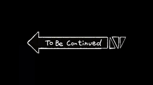

Visualize fretboard
There are lots of ways to visualize the fretboard. After watching at least 50+ videos on youtube about this topic, I conclude that everyone has their own system, and the only way for you to internalize the fretboard is to design your own as well. There are some well known general principles like CAGED, 3 notes per string, and for jazz guitar some people use the pat martino system which is baesd on augmented and diminished chord shapes. But when you listen to how different guitarists describe these systems, the descriptions are all sligthly different from each other. My personal experience is, you don’t need to choose which one to use, you can simply learn them all because they all can contribute to your understanding.
A interesting thing I realize is fretboard system is like any other systems, there is a difference on efficiency. The fretboard knowledge is pretty much static, so when thinking about the fretboard, the most important thing to consider is the look up time. We want a robust system that you can easily look up for things that we’re interested in real time. The system need to take human capacity into consideration as well, I’m not a robot, and there’re only limited amount of things I can memorize at a moment. Thus, the less thing I need to keep in mind at once the better. You can also do some optimizations on the system to specialize it for a specific genre. For example, Joe Pass only play 5th in a 2 5 1 beacuse IIm7 and V7 shares a lot of notes. There are lot of space for exploration, and the final system can be directly used in your play.
I like to think about fretboard system as an intermediate step when you’re learning. People spend the entire life learning guitar, and most great guitarist are good at some sub genere instead of everything. Ideally, you should simply know all the ways to play a D13, but because you cannot do that, some way to navigate around to deduce the chord is required. Practicing help you to build that direct mapping from music in brain to finger positioning, but practicing takes years! Before I fully mastered every detail of guitar, I want to make music now!
In this article I want to describe how my system work, it’s highly personal and can change over time, but I think it’s valuable to write it down and share, just for my own references. I’ll update the content as I learn more so this article will be different every now and then.
Notation
Before anything else, I want to introduce this color coded system for all 12 notes. In style western music we have 12 notes, but why instead of having 12 different names for each note, we need to sharp and flat notes all the time? It’s related to how historically piano is contructed with major scale in mind and how everthing else comes are structured around the major scale. However, you also use a whole bunch of other scales, because of this piano legacy, analysis of everything else is compromised. I like to treat each note as a completely unique individual, e.g instead of thinking 3b as flat thrid, it’s just 3b. Then I color code each note, so whenever I draw a digram I will use the color instead of the name.
Root, fourth, fifth skeleton
Everything I do is based on the root and fifth. Root and fifth are the most stable across almost all scales. You always need a root, and you almost always have a fifth unless it’s a diminished appegio or lucrian mode. Without thinking about anything else, I’m at least always able to see the following pictures for all keys.

I split the fretboard into 5 areas just like how most pentatonic tutorials tell you to, so when I’m working at a small area, I always know where the root and fifth are, where are the root and fifth above this position, and where root and fifth below it. This give you some basic local mobilities.
Scale degree vs Note names
I find it extremely difficult to think about note names in scales. If I’m thinking about Dorian, I know it’s 1 2 3b 4 5 6 7b, but when I try to figure out a E dorian, I can’t tell you right away that it’s E F# G A B C# D. People with a lot of experience seems to be able to do this, but I think it’s much more efficient to practice with scale degree first then move the root. So I usually first look for where the root is, then substitute the shape I learned based on scale degree and completely ignore the note name. For example, I will know I’m playing a 4th in dorian E base on the interval shape, but I don’t know that 4th is A or A#. Most of the time I don’t even know it’s an A.
Root and fifth as landmarks.
Sometimes you can’t recall where a scale degree is, but because you always know the root and the fifth, you can easily figure it out. For all 12 notes 1 2b 2 3b 3 4 5b 5 6b 6 7b 7, root and fifth split it into two subsets base on the distance between them and other notes. It’s easy to move 4 semintons at the same position, so given root or fifth position and move 4 semitones, we have {6b, 6, 7b, 7, 1, 2b 2, 3b, 3} and {3b, 3, 4, 5b, 5, 6b 6, 7b, 7}. For these two ses, any note has a path less than 3 semitones away from either root or the fifth. So it’s easy to find any scale degree at least in a single string if you know the root or the fith by heart.
4th is a good addition to this system, but it’s not as important as the other two. The good part is together with root and fifth you get sus4 appegio, so get one appegio for free.
If you want to find notes across strings, you need to study intervals. This awesome tool is really helpful to build a connection between the interval and the fretboard shape. Once you are comfortable with interval across all 6 strings, you can easily find the 6th or 7th 2 strings apart from the root.
To speed up things even further, we can then study the intervals starts from the fifth. If we consider the fifth is the root note, then we can map the scale degree starts from root to the fifth. Look at the following mapping:
scale degree: {1 , 2b, 2 , 3b, 3 , 4, 5b, 5 , 6b, 6 , 7b, 7} =>
5th as root: {5 , 6b, 6 , 7b, 7 , 1, 2b, 2 , 3b, 3 , 4 , 5b} With this mapping in mind, you should be able to tell the 4th above 5th is the root, the 7b above 5th is the 4th, etc.
Root and fifth are like basis in the space of 12 notes, it’s stable across genres, it’s easily to think about. Most scales and appegios have the root and the fourth, so it’s pretty flexible as well, you can easily plugin other notes to make it something else.
Appegios
Because we already know the root and the fifth, we only need to plugin the major third. If we add the 7th as well, we get the major 7th appegio. The following is the major appegio across the entire fretboard.
It looks daunting, but if you know root and fifth and learn it position by position is actually pretty managable. Earlier we divide the fretboard into five position, we inherit that position analysis here, then appegio becomes this.

But this is still too complicated, when you’re improvising in real time, there’re quite a lot of information to think about. So after understanding the general relationship betwen the root and the fifth, I will further split it into smaller, actionable patterns.
Major Traids
This is the most basic chord shapes that everyone should know by heart. Usually on the internet you will see major traid chord digram in the form of CAGED shape, or bar shape, but that gives you too much noise. Sometimes I only want to play 1 3 5, or 5 1 3, and I want to know where to find it relative to my current position as well. With a root and fifth system we layed out earlier, we are able to fit these shapes and know how each shape relates to eash other.

Another neat thing is that these are just abstract shape, so if you want to play traid for the fourth diatonic chord in C major, you just need to treat 4th as the root and find the same shape!
Shell voicing
Now let’s extend to the 7th chords. We always play the simplest form first, because it reduces the mental overhead. Here is the digram of the major 7th shell vocing across in all positions. You will notice that there’re only suprisingly few shell voicing shapes out there. The trend for chords is the more complex it is, the less available shapes you can choose from. Some extended chords with the extension voiced at the highest note can only played in one position across the entire fretboard, this is the limitation of guitar.
Minor, dominant variations.
Once you know major shapes, it’s easy to do minor. All you need to do is to shift the 3b to 3 and 7b to 7. Domain is easy too because you can keep the major 3rd and only flat the 7th. Though it’s simple, you still need to practice them individually to be familiar with them. However, instead of treat minor and domiant as complete different entities, we create a relationship between new content and what we already known.
last update 2024-06-04 I will keep adding new content here…
